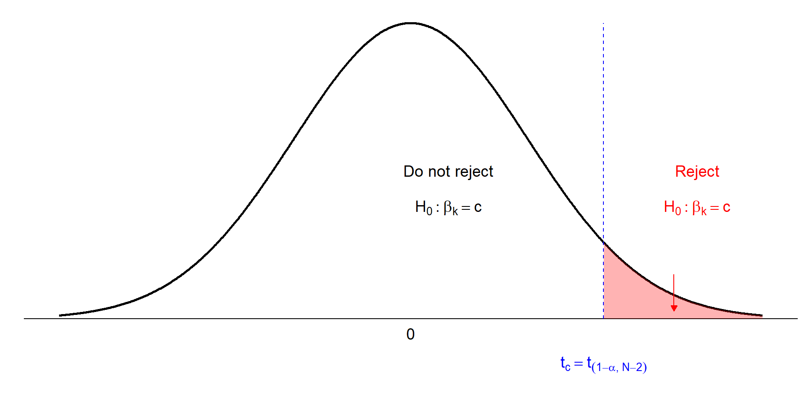
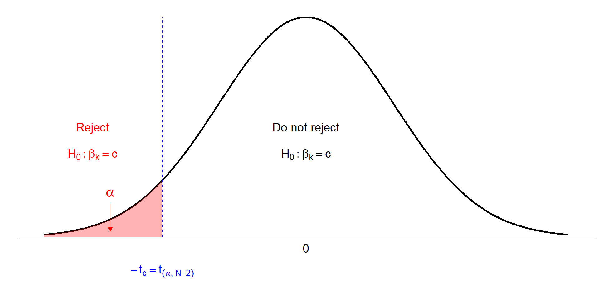
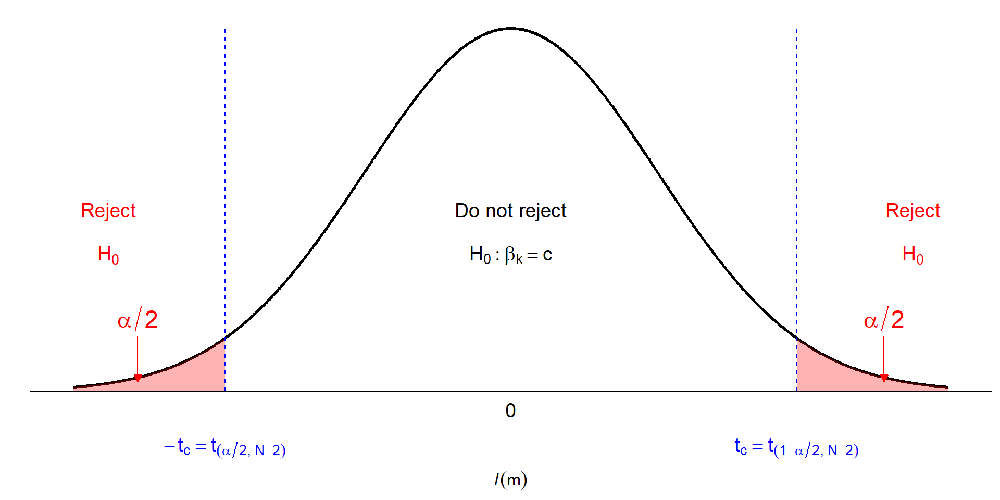

Interval Estimation and Hypothesis Testing (Chap 3)
Interval Estimation
Interval estimation proposes a range of values in which the true parameter \(\beta\) is likely to fall.
Providing a range of values gives a sense of what the parameter value might be, and the precision with which we have estimated it.
Such intervals are often called confidence intervals, though we prefer to call them interval estimates because the term “confidence” is widely misunderstood and misused.
The t-Distribution
The normal distribution of \(b_2\), the least squares estimator of \(\beta_2\), is:
\[b_2 | x \sim N \left( \beta_2, \frac{\sigma^2}{\sum (x_i - \bar{x})^2} \right)\] - Standardize \(b_2\), we get: \[Z = \frac{b_2 - \beta_2}{\sqrt{\sigma^2 / \sum (x_i - \bar{x})^2}} \sim N(0,1)\]
Question: How many of the these intervals contain the true parameters, and which ones are they?
Answer: We do not know.
But \(95\%\) of all interval constructed this way contain the true parameter values.
Recap:
Sampling variability causes the:
center of each of the interval estimates to change with the values of the least squares estimates
The widths of the intervals to change with the standard errors
Interval estimators are a convenient way to report regression results.
Interval estimators combine point estimation with a measure of sampling variability
Hypothesis Tests
Hypothesis testing is a procedure for comparing a claim about a population with the evidence provided by a sample of data.
Example (Food Expenditure):
Suppose we want to know whether \(\beta_2\) (the effect of income on food expenditure) is greater than \(10\).
This matters for decision-making: if \(\beta_2 >10\), a \(\$100\) increase in income increases food spending by more than \(\$10\).
Economic theory also suggests that \(\beta_2\) should be positive.
Goal: Use the sample data to check whether the theoretical proposition (e.g., \(\beta_2 >10\) is supported.
Hypothesis Tests…
Every hypothesis test has five ingredients:
A null hypothesis \(H_0\)
An alternative hypothesis \(H_1\)
A test statistic
A rejection region
A conclusion
i) The Null Hypothesis
The null hypothesis \(H_0\) specifies a value for a regression parameter.
That is, \(\beta_k\) for \(k = 1\) or \(2\).
It is stated as \(H_0: \beta_k = c\), where \(c\) is a constant.
A null hypothesis is the belief we will maintain until we are convinced by the sample evidence that it is not true, in which case we reject the \(𝐻_0\).
ii) The Alternative Hypothesis
Paired with every \(H_0\) is a logical alternative hypothesis \(𝐻_1\) that we will accept if the \(𝐻_0\) is rejected
The alternative hypothesis \(H_1\) is accepted if the null is rejected.
For \(H_0: \beta_k = c\), there are three possible alternative hypotheses.
\(H_1: \beta_k < c\),\(\implies\) accept the conclusion \(\beta_k < c\)
\(H_1: \beta_k \neq c\), \(\beta_k\) takes a value either larger/smaller than \(c\)
iii) The Test Statistic
The sample information about the \(H_0\) is embodied in the sample value of a test statistic
A test statistics has a special characteristic:
Its probability distribution is completely known when the\(H_0\) is true
It has some other distribution if the \(H_0\) is not true
iii) The Test …
It all starts with: \[t=\frac{b_k-\beta_k}{se(b_k)}\]
If \(H_0:\beta_k = c\) is true, then, we can substitute \(c\) for \(\beta_k\) and it follows that
\[t=\frac{b_k-c}{se(b_k)} \sim t_{(N-2)}\]
iv) The rejection Region
The rejection region depends on the \(H_1\)
It is the range of values of the test statistic that leads to rejection of \(H_0\)
The rejection region consists of values that are unlikely and that have low probability of occurring when the \(H_0\) is true
iv) The rejection…
It is possible to construct a rejection region only if we have:
A test statistic whose distribution is known when the \(H_0\) is true
An alternative hypothesis, \(H_1\)
A level of significance, \(\alpha\)
The level of significance \(\alpha\) is usually \(1\%, 5\%\) or \(10\%\)
iv) The rejection…
If we reject the \(H_0\) when it is true, then we commit what is called a Type I error
we can specify the amount of Type I error we will tolerate by setting the level of significance α
If we do not reject a \(H_0\) that is false, then we have committed a Type II error
we cannot control or calculate the probability of this type of error
v) Conclusion
When you have completed testing a hypothesis, you should state your conclusion
Do you reject/not reject the \(H_0\)?
Interpret the conclusion in economic context
Avoid saying that you “accept” the \(H_0\), which can be very misleading
Rejection Regions for Specific Alternatives
To have a rejection region for a null hypothesis, We need
a test statistic
a specific alternative, \(\beta_k > c, \ \beta_k <c\) and \(\beta_k \neq c\)
to specify the level of significance of the test
Rejection region with Alternative “>”
\(H_0: \beta_k = c\) vs \(H_1: \beta_k > c\)
Reject \(H_0\) if \(t \geq t_{(1-\alpha, N-2)}\)
This is a one-tail hypothesis/test

Rejection region with Alternative “<”
\(H_0:\beta =c\) vs \(H_1:\beta < c\)
Reject \(H_0\) if \(t \leq t_{(\alpha, N-2)}\)
This is a one-tail hypothesis

Rejection region with alternative “≠”
\(H_0:\beta =c\) vs \(H_1:\beta \neq c\)
Reject \(H_0\) if \(t \leq t_{(\alpha/2, N-2)}\) or \(t \geq t_{(1-\alpha/2, N-2)}\)
This is a two-tail hypothesis

Step-by-step procedure for testing hypotheses
Determine the \(H_0\) & \(H_1\)
Specify the test statistic & its distribution if the \(H_0\) is true
Select \(\alpha\) & determine the rejection region
Calculate the sample value of the test statistic
State your conclusion
Example 3.2: Right-Tail Test of Significance
\(H_0: \beta_2 = 0\), \(H_1: \beta_2 > 0\)
In this case \(c=0\)
The test statistic is \(t= \frac{b2-c}{se(b2)} \sim t_{(1-\alpha, N-2)}\)
select \(\alpha = 5\%\). The critical value \(t_c = t_{(1-0.05, 40-2)} = t(0.95,38)=1.686\)
Thus we will reject the null hypothesis \(H_0\) if the calculated value of \(t ≥ 1.686\)
If t < 1.686, we will not reject the null hypothesis
Example 3.2 …
Using the food expenditure data, we found that \(b_2 = 10.21\) with standard error \(se(b2) = 2.09\)
The value of the test statistic is: \(t= \frac{b2-c}{se(b2)} = \frac{10.21-0}{2.09}=4.88\)
The conclusion:
Since \(t = 4.88 > 1.686\), we reject the null hypothesis that \(\beta_2 = 0\) and accept the alternative that \(\beta_2 > 0\)
Example 3.2 …
That is, we reject the hypothesis that there is no relationship between income and food expenditure, and conclude that there is a statistically significant positive relationship between household income and food expenditure
Simultaneous Tests for General Linear Hypotheses
Fit: lm(formula = food_exp ~ income, data = food)
Linear Hypotheses:
Estimate Std. Error t value Pr(>|t|)
income == 0 10.210 2.093 4.877 1.95e-05 ***
---
Signif. codes: 0 '***' 0.001 '**' 0.01 '*' 0.05 '.' 0.1 ' ' 1
(Adjusted p values reported -- single-step method)
# The critical value: qt(0.95, 38) # Critical value for alpha=0.05
[1] 1.685954
# Comparison: Check if t > critical valuesummary(glht(fit, linfct =c("income <= 0")))$test$tstat >qt(0.95, 38)
income
TRUE
Example 3.3: Test of Economic Hypothesis
\(H_0: \beta_2 \leq 5.5\), \(H_1: \beta_2 > 5.5\)
In this case \(c=5.5\)
The test statistic is \(t= \frac{b2-c}{se(b2)} \sim t_{(1-\alpha, N-2)}\)
select \(\alpha = 1\%\). The critical value \(t_c = t_{(1-0.01, 40-2)} = t(0.99,38)=2.429\)
Thus we will reject the null hypothesis \(H_0\) if the calculated value of \(t ≥ 2.429\)
If t < 2.429, we will not reject the null hypothesis
Example 3.3 …
Again, using the food expenditure data, we found that \(b_2 = 10.21\) with standard error \(se(b2) = 2.09\)
The value of the test statistic is: \(t= \frac{b2-c}{se(b2)} = \frac{10.21-5.5}{2.09}=2.25\)
The conclusion:
Since \(t = 2.25 < 2.429\), we do not reject the \(H_0\) that \(\beta_2 \leq 5.5\) and accept the alternative that \(\beta_2 > 5.5\)
That is, We are not able to conclude that the new supermarket will be profitable and will not begin construction
# Example 3.3summary(glht(fit, linfct =c("income <= 5.5")))
Simultaneous Tests for General Linear Hypotheses
Fit: lm(formula = food_exp ~ income, data = food)
Linear Hypotheses:
Estimate Std. Error t value Pr(>t)
income <= 5.5 10.210 2.093 2.25 0.0152 *
---
Signif. codes: 0 '***' 0.001 '**' 0.01 '*' 0.05 '.' 0.1 ' ' 1
(Adjusted p values reported -- single-step method)
# Check if t > critical valuesummary(glht(fit, linfct =c("income <= 5.5")))$test$tstat >qt(0.99, 38)
income
FALSE
Example 3.4: Test of Economic Hypothesis
\(H_0: \beta_2 \geq 15\), \(H_1: \beta_2 < 15\)
In this case \(c=15\)
The test statistic is \(t= \frac{b2-c}{se(b2)} \sim t_{(1-\alpha, N-2)}\)
select \(\alpha = 5\%\). The critical value \(t_c = t_{(0.05, 40-2)} = t(0.05,38)= - 1.686\)
Thus we will reject the null hypothesis \(H_0\) if the calculated value of \(t \leq - 1.686\)
If \(t > - 1.686\), we will not reject the \(H_0\)
Example 3.4 …
Again, using the food expenditure data, we found that \(b_2 = 10.21\) with standard error \(se(b2) = 2.09\)
The value of the test statistic is: \(t= \frac{b2-c}{se(b2)} = \frac{10.21-15}{2.09}= -2.29\)
The conclusion:
Since \(t = -2.29 < -1.686\), we reject the null hypothesis that \(\beta_2 \leq 15\) and accept the alternative that \(\beta_2 > 15\)
We conclude that households spend less than \(\$ 15\) from each additional \(\$100\) income on food.
# Example 3.4summary(glht(fit, linfct =c("income >= 15")))
Simultaneous Tests for General Linear Hypotheses
Fit: lm(formula = food_exp ~ income, data = food)
Linear Hypotheses:
Estimate Std. Error t value Pr(<t)
income >= 15 10.210 2.093 -2.288 0.0139 *
---
Signif. codes: 0 '***' 0.001 '**' 0.01 '*' 0.05 '.' 0.1 ' ' 1
(Adjusted p values reported -- single-step method)
# Check if t < critical valuesummary(glht(fit, linfct =c("income >= 15")))$test$tstat <qt(0.05, 38)
income
TRUE
Example 3.5: Two-Tail Test of Economic Hypothesis
\(H_0: \beta_2 = 7.5\), \(H_1: \beta_2 \neq 7.5\)
In this case \(c=7.5\)
The test statistic is \(t= \frac{b2-c}{se(b2)} \sim t_{(1-\alpha, N-2)}\)
select \(\alpha = 5\%\). The critical value \(t_c = t_{(1-0.025, 40-2)} = t(0.975,38)= - 2.024\)
Thus we will reject the null hypothesis \(H_0\) if the calculated value of \(t \ge 2.024\) or if \(t \leq- 2.024\)
If \(-2.024 \leq t \leq 2.024\), we will not reject the null hypothesis
Example 3.5 …
Again, using the food expenditure data, we found that \(b_2 = 10.21\) with standard error \(se(b2) = 2.09\)
The value of the test statistic is: \(t= \frac{b2-c}{se(b2)} = \frac{10.21-7.5}{2.09}= 1.29\)
The conclusion:
Since \(t = -2.204 < t=1.29 \leq 2.204\), we do not reject the null hypothesis that \(\beta_2 =7.5\).
The sample data are consistent with the conjecture households will spend an additional \(\$ 7.50\) per additional \(\$100\) income on food.
# Example 3.5summary(glht(fit, linfct =c("income = 7.5")))
Simultaneous Tests for General Linear Hypotheses
Fit: lm(formula = food_exp ~ income, data = food)
Linear Hypotheses:
Estimate Std. Error t value Pr(>|t|)
income == 7.5 10.210 2.093 1.294 0.203
(Adjusted p values reported -- single-step method)
qt(c(0.025, 0.975), 38) # Critical values for alpha=0.05
The test statistic is \(t= \frac{b2-c}{se(b2)} \sim t_{(1-\alpha/2, N-2)}\)
select \(\alpha = 5\%\). The critical value \(t_c = t_{(1-0.025, 40-2)} = t(0.975,38)= 2.024\)
Reject \(H_0\) if \(t \ge 2.024\) or \(t \leq- 2.024\)
Do not reject \(H_0\) if \(-2.024 \leq t \leq 2.024\)
Example 3.6 …
Using the food expenditure data, we have \(b_2 = 10.21\) & \(se(b2) = 2.09\)
The value of the test statistic is: \(t= \frac{b2-c}{se(b2)} = \frac{10.21-0}{2.09}= 4.88\)
The conclusion:
Since \(t = 4.88 > 2.204\), we reject the null hypothesis that \(\beta_2 =0\).
We conclude that there is a statistically significant relationship between income and food expenditure.
# Example 3.6summary(fit) # Includes two-tail test for slope
Call:
lm(formula = food_exp ~ income, data = food)
Residuals:
Min 1Q Median 3Q Max
-223.025 -50.816 -6.324 67.879 212.044
Coefficients:
Estimate Std. Error t value Pr(>|t|)
(Intercept) 83.416 43.410 1.922 0.0622 .
income 10.210 2.093 4.877 1.95e-05 ***
---
Signif. codes: 0 '***' 0.001 '**' 0.01 '*' 0.05 '.' 0.1 ' ' 1
Residual standard error: 89.52 on 38 degrees of freedom
Multiple R-squared: 0.385, Adjusted R-squared: 0.3688
F-statistic: 23.79 on 1 and 38 DF, p-value: 1.946e-05
CI approach of testing two-tail hypothesis
Decision Rule
If \(0\) is inside the confidence interval, you fail to reject \(H_0\).
If \(0\) is not inside the confidence interval, you reject \(H_0\) at significance level \(\alpha\).
# Example 3.6confint(fit, level=0.95) # CI for slope
2.5 % 97.5 %
(Intercept) -4.463279 171.29528
income 5.972052 14.44723
The p-Value
When reporting the outcome of statistical hypothesis tests, it has become standard practice to report the \(p\)-value (an abbreviation for probability value) of the test.
If we have the p-value of a test, \(p\), we can determine the outcome of the test by comparing the \(p\)-value to the chosen level of significance,\(\alpha\), without looking up or calculating the critical values.
This is much more convenient
The p-Value Rule
\(p \leq \alpha\), Reject \(H_0\)
\(p > \alpha\), do not Reject \(H_0\)
Example 3.3 (Continued)
\(H0: β2 ≤ 5.5\) vs \(H1: β2 > 5.5\)
The test statistic: \(t= \frac{b2-c}{se(b2)} = \frac{10.21-5.5}{2.09}= 2.25\)
The p-value is: \(p = P[t_{(38)}\ge 2.25]=1-P[t_{(38)}\leq 2.25] = 1-0.9848=0.0152\)
\(\alpha=0.01\), do not reject \(H_0\)
Do you reject/not reject \(H_0\) if \(\alpha = 0.05?\)
# Example 3.3summary(glht(fit, linfct =c("income <= 5.5")))
Simultaneous Tests for General Linear Hypotheses
Fit: lm(formula = food_exp ~ income, data = food)
Linear Hypotheses:
Estimate Std. Error t value Pr(>t)
income <= 5.5 10.210 2.093 2.25 0.0152 *
---
Signif. codes: 0 '***' 0.001 '**' 0.01 '*' 0.05 '.' 0.1 ' ' 1
(Adjusted p values reported -- single-step method)
Example 3.4 (Continued)
The null hypothesis is \(H0: β2 \ge 15\) vs \(H1: β2 < 15\)
The value of the test statistic is: \(t= \frac{b2-c}{se(b2)} = \frac{10.21-15}{2.09}= - 2.29\)
The p-value is: \(p = P[t_{(38)}\leq -2.29]= 0.0139\)
If \(\alpha=0.01\), we do not reject \(H_0\).
# Example 3.4summary(glht(fit, linfct =c("income >= 15")))
Simultaneous Tests for General Linear Hypotheses
Fit: lm(formula = food_exp ~ income, data = food)
Linear Hypotheses:
Estimate Std. Error t value Pr(<t)
income >= 15 10.210 2.093 -2.288 0.0139 *
---
Signif. codes: 0 '***' 0.001 '**' 0.01 '*' 0.05 '.' 0.1 ' ' 1
(Adjusted p values reported -- single-step method)
Example 3.5 (Continued)
The null hypothesis is \(H0: β2 = 7.5\) vs \(H1: β2 \neq 7.5\)
The value of the test statistic is: \(t= 1.29\)
The p-value is: \(p = P[t_{(38)}\ge 1.29]+P[t_{(38)}\leq -1.29]= 0.2033\)
Do not reject \(H_0\) for \(\alpha=0.05, 0.10\) or \(\alpha=0.20\) b/c \(p > \alpha\).
# Example 3.5summary(glht(fit, linfct =c("income = 7.5")))
Simultaneous Tests for General Linear Hypotheses
Fit: lm(formula = food_exp ~ income, data = food)
Linear Hypotheses:
Estimate Std. Error t value Pr(>|t|)
income == 7.5 10.210 2.093 1.294 0.203
(Adjusted p values reported -- single-step method)
Example 3.6 (Continued)
\(H0: β2 = 0\) vs \(H1: β2 \neq 0\)
The test statistic: \(t= 4.88\)
The p-value is: \(p = P[t_{(38)}\ge 4.88]+P[t_{(38)}\leq -4.88]= 0.000\)
# Example 3.6summary(fit) # Includes two-tail test for slope
Call:
lm(formula = food_exp ~ income, data = food)
Residuals:
Min 1Q Median 3Q Max
-223.025 -50.816 -6.324 67.879 212.044
Coefficients:
Estimate Std. Error t value Pr(>|t|)
(Intercept) 83.416 43.410 1.922 0.0622 .
income 10.210 2.093 4.877 1.95e-05 ***
---
Signif. codes: 0 '***' 0.001 '**' 0.01 '*' 0.05 '.' 0.1 ' ' 1
Residual standard error: 89.52 on 38 degrees of freedom
Multiple R-squared: 0.385, Adjusted R-squared: 0.3688
F-statistic: 23.79 on 1 and 38 DF, p-value: 1.946e-05
confint(fit, level=0.95) # CI for slope
2.5 % 97.5 %
(Intercept) -4.463279 171.29528
income 5.972052 14.44723
Linear Combinations of Parameters
We may wish to estimate and test hypotheses about a linear combination of parameters,
\[\lambda = c_1 \beta_1 + c_2 \beta_2\], where \(c1\) and \(c_2\) are constants that we specify
Under SR1–SR5, \[\hat{\lambda} = c_1 b_1 + c_2 b_2\] is the best linear unbiased estimator of \(\lambda\).
Linear…
One example is if we wish to estimate the expected value \(E(y|x)\),
when \(x\) takes some specific value, such as \(x=x_0\)
In this case, \(c_1 = 1\) & \(c_2 = x_0\), so that,
The t-statistic is: \[t =\frac{\hat \lambda-\lambda}{se(\hat{\lambda})}= \frac{(c_1b_1 + c_2b2_2) - c_0}{\text{se}(c_1b1_1 + c_2b2_2)} \sim t_{(N-2)}\]
Testing…
The rejection regions for the one- and two-tail alternatives (i) – (iii) are the same as those described in Section 3.3, and conclusions are interpreted the same way as well
Testing a linear combination
Test \(H_0: b1 + 20b2 <= 250\) vs \(H_1: b1 + 20b2 > 250\)